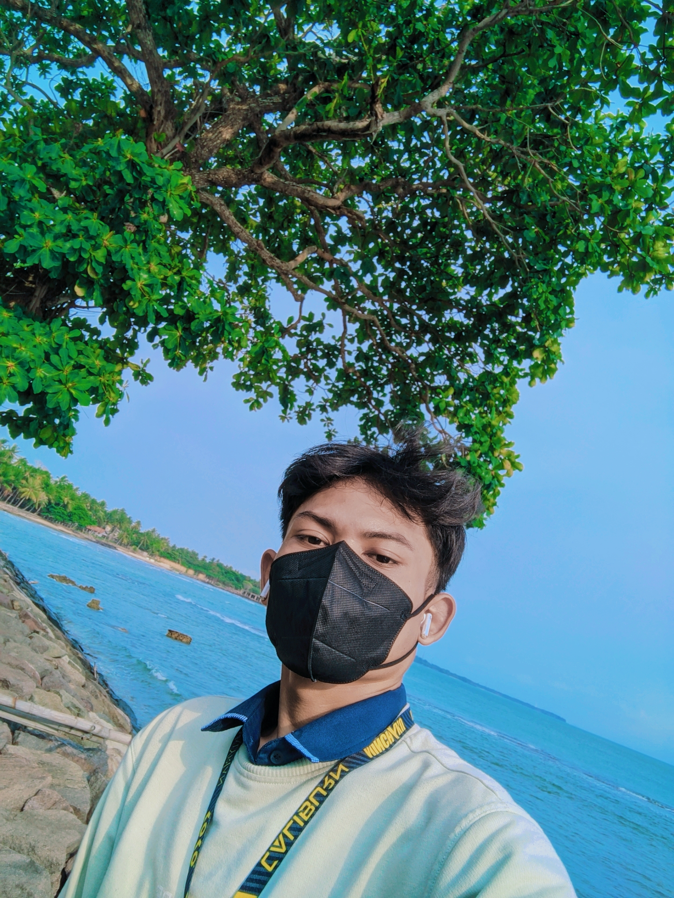
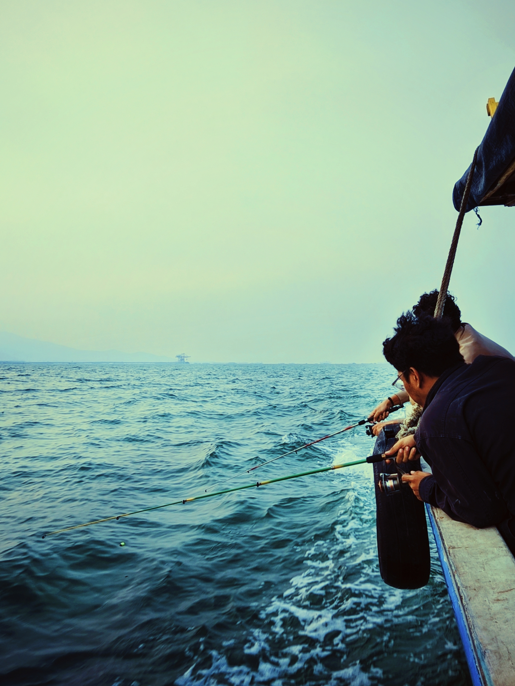
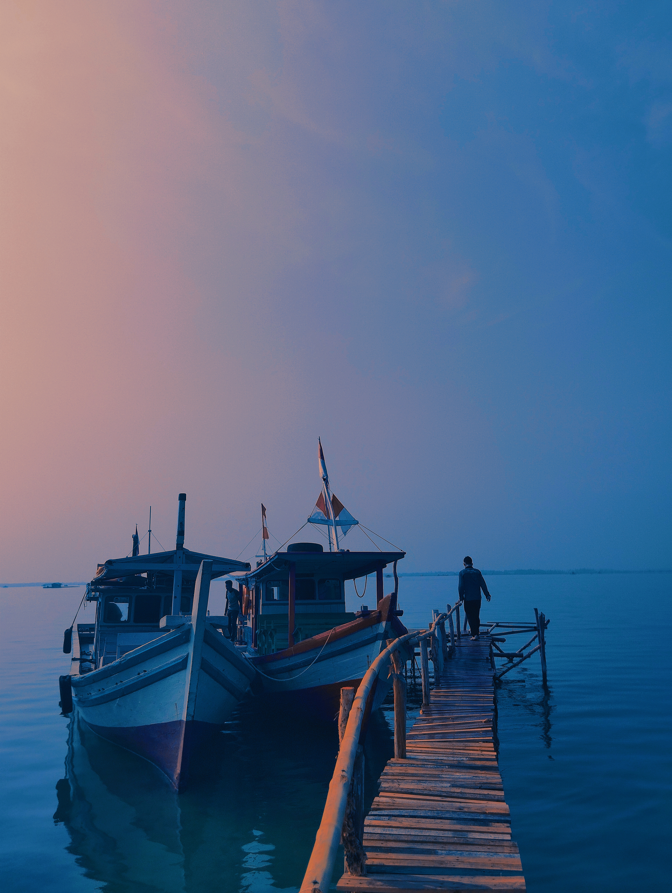

Aziz Budiman
Saya adalah mahasiswa aktif Ilmu Kelautan yang memiliki minat kuat dalam isu lingkungan laut, pengembangan potensi pesisir, dan pemberdayaan masyarakat. Berpengalaman dalam kegiatan penyelaman ilmiah untuk monitoring dan pengembangan terumbu karang di Pulau Tunda.
+62 82125739406 azizbudiman930@gmail.com Jl. Raya Pasar Ciomas, Serang-Banten
Lihat PortofolioRiwayat Pendidikan
-
Universitas Sultan Ageng Tirtayasa (UNTIRTA) | 2022 - Sekarang
Jurusan: Ilmu Kelautan (Semester 6)
-
SMA Negeri 1 Ciomas | 2019 - 2022
Peminatan: Ilmu Pengetahuan Alam (IPA)
Keahlian Utama & Sertifikasi
Keahlian Teknis & Kreatif
- Penyelam Ilmiah
- Fotografi & Videografi
- Desain Grafis
- Editing Video (Premiere Pro/CapCut)
- Copywriting Media Sosial
Sertifikasi dan Lisensi
- Open Water Diver (A1)
- Advance Open Water Diver (A2)
- Underwater Photography License
Pengalaman Organisasi & Akademik
- Asisten Laboratorium Selam Ilmiah | 2023 - Sekarang
- Tim Media dan Publikasi Jawara Diving Club | 2024 - Sekarang
- Anggota Aktif Gencar Untirta | 2024 - Sekarang
- Kepala Divisi SOSMED LSO Himaika | 2023 - 2024
- Asisten Laboratorium Ekologi Laut | 2024
- Asisten Laboratorium Ekologi Perairan | 2022 - 2024
- Anggota Divisi Pengembangan Internal YBM PLN UNTIRTA | 2022-2023
- Tim Media YMB RO Banten | 2022
Karya Visual Pilihan
Koleksi visual yang saya abadikan dalam berbagai momen dan proyek, menunjukkan kemampuan teknis dan storytelling.
Fotografi
{kind=link}

Momen Ketenangan di Laut
Pengambilan gambar low-light yang menangkap siluet nelayan saat memancing.
{kind=link}

Refleksi Pelabuhan
Komposisi yang menampilkan dua kapal bersandar dengan refleksi sempurna di air pelabuhan.
Videografi & Editing
Dokumentasi Ekspedisi Selat Sunda
Video dokumentasi penuh aksi yang merekam kegiatan survei dan eksplorasi di Selat Sunda.
Proyek Penanaman 100 Fishdome
Merekam kegiatan konservasi dan penanaman 100 fishdome di perairan untuk restorasi habitat laut.
Hubungi Saya
Tertarik untuk berdiskusi tentang proyek konservasi, media, atau kolaborasi digital? Mari terhubung!
- Email: azizbudiman930@gmail.com
- Telepon/WhatsApp: +62 82125739406
- Lokasi: Jl. Raya Pasar Ciomas, Serang-Banten
- Instagram: @aziz.budiman2